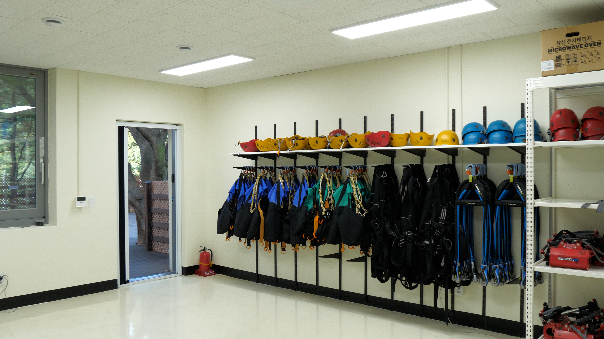

출발지 교육장
짚코스터 출발지에 위치한 체험 전 준비 및 안전교육 공간입니다.


짚코스터 이용 전 안전교육과 안전장구류 착용이 이루어지는 공간입니다.
주요 이용 정보
짚코스터 이용 전 필요한 주요 사항을 확인하세요.
🦺 안전교육
짚코스터 체험 전 이용방법과 안전수칙에 대한 교육이 진행됩니다.
⛑️ 안전장구류 착용
체험에 필요한 안전장구류를 착용하고 짚코스터 출발을 준비합니다.
🎟️ 매표
출발지 교육장에서도 산림레포츠 이용을 위한 매표가 가능합니다.
🚻 화장실
교육장 외부에 위치한 화장실을 이용할 수 있습니다.
위치 안내
출발지 교육장의 위치를 확인하세요.
📍 짚코스터 출발지
출발지 교육장은 짚코스터 출발지에 위치하며, 체험 전 안전교육과 안전장구류 착용이 이루어집니다.
관련 시설 안내
함께 이용할 수 있는 주요 시설을 확인하세요.